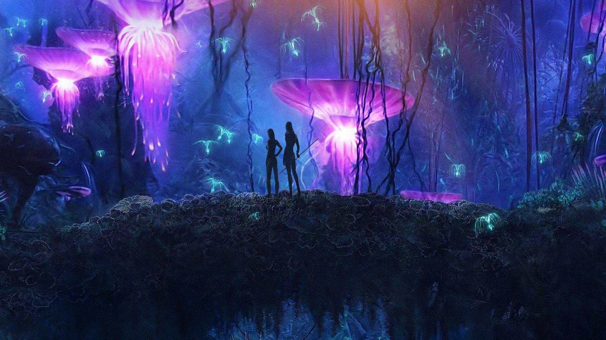
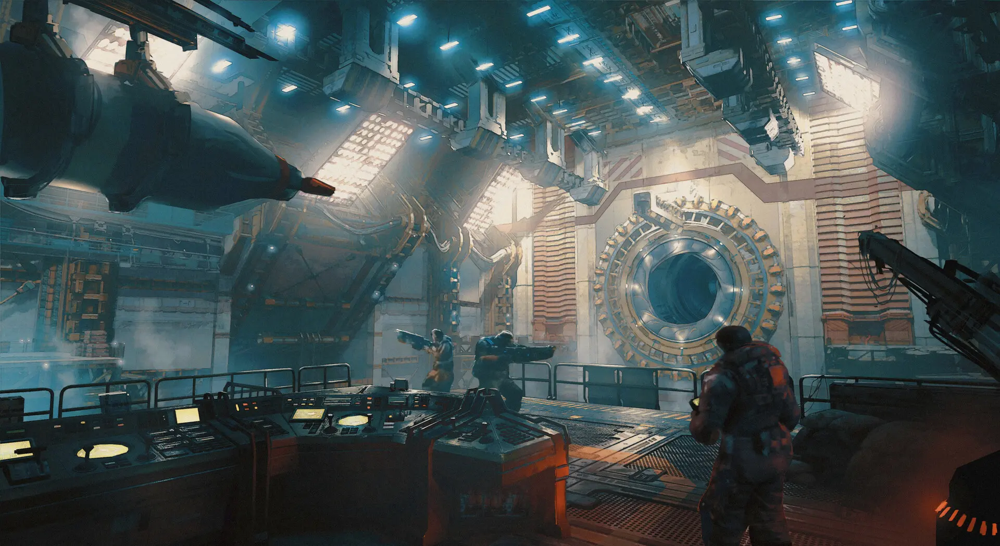
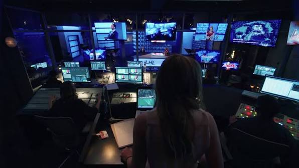
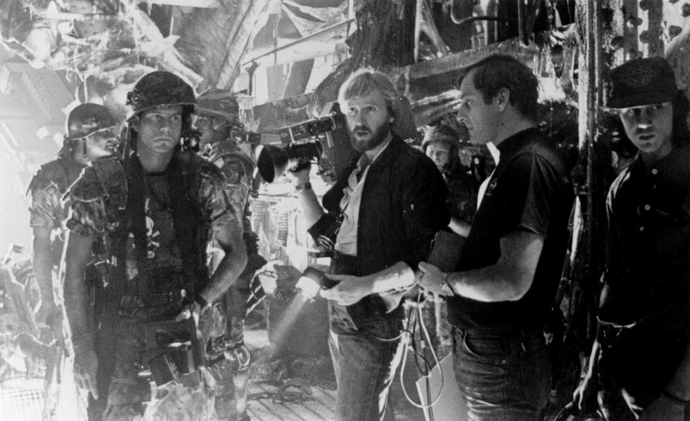
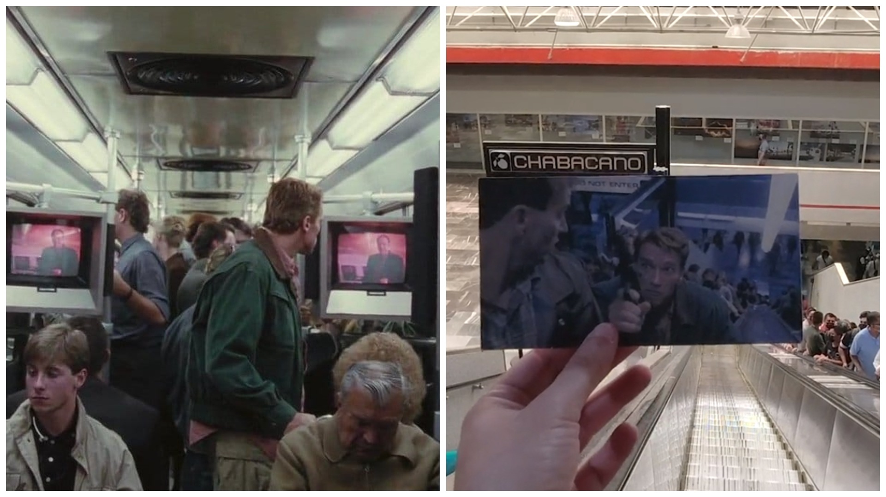

LOS SECRETOS DETRAS DEL ARTE DE LA ANIMACIÓN 3D
¿En relidad crees conocer lo que ocurre detras de la pantalla?. Con mas de centenares de momentos en cintas James Camerón ha creado el mundod de la: ANIMACIÓN 3D
Para armar los sets de las películas de James Cameron, no solo se usan pantallas verdes o azules convencionales, sino un sistema llamado Performance Capture dentro de escenarios vacíos conocidos como "El Volumen".
Lo fascinante y secreto es que los actores no ven nada de lo que el público presencia en el cine: actúan en espacios grises rodeados de cámaras infrarrojas. Cameron utilizaba una cámara virtual (un monitor especial) que funcionaba como una "ventana mágica" en tiempo real. Al apuntarla al actor con traje de sensores, la pantalla le revelaba digitalmente el mundo fantastico de la idea loca ya renderizado.

¿Comó es que lo Ejecuta?
El misterio detrás de esto es que el director caminaba literalmente dentro de un videojuego en vivo, dirigiendo a actores invisibles en un set vacío donde las criaturas y la selva solo existían en su imaginación cibernética.
¿Que identifica la animacion 3D de James Cameron de otros Directores?
Para crear los mundos hiperrealistas de sus películas, James Cameron no esculpe en arcilla física, sino que utiliza una técnica secreta llamada Facial Performance Replacement (FPR)
James Cameron buscaretocar las expresiones faciales de los actores meses después de terminar la película. Su equipo trabaja duró los rostros digitales fotograma por fotograma. El misterio es que las emociones que ves en pantalla son esculturas digitales vivas rediseñadas por completo de forma invisible.
James Cameron saca su obsesión por combinar animales reales y animatrónicos de su profunda fascinación por la biología marina y la naturaleza salvaje, buscando que la física y el peso real de las criaturas se sientan auténticos antes de tocarlas con la computadora.

Datos que nunca pensaste que lograrían la magia del 3D "Curiocidades por compartir"
¿Sabías que el rey del cine digital, James Cameron, es en realidad un fanático obsesivo de los maquetistas de la "vieja escuela" ? A pesar de revolucionar los efectos por computadora, Cameron prefiere construir escenarios miniatura y modelos físicos porque cree firmemente que las computadoras a veces "olvidan" la gravedad. Para él, la luz real rebotando en el polvo, el metal o el agua sucia es imposible de replicar con total perfección matemática, por lo que prefiere tocar y destruir el mundo antes de digitalizarlo.
Características:

- Secreto a Escala: El verdadero uso que le da James Cameron antes de entrar a la computadora es su Mando al construir miniaturas jigantes de mas de 100 metros de largo, gigantes lugares al alcance de unos cuantos pasos.
- Curiocidad Imposible:Para proyectos de grán escala, el equipo de efectos especiales, se ocupa de recrear escenarios con explosiones y drama escenografico, dando asi paso a la fisica y logica de la escena, para que en postproducción se agregue el CGI.
El misterio de la escena Chilanga
Aunque muchas personas confunden las películas de acción de Arnold Schwarzenegger de esa época, la que realmente se grabó en las instalaciones del Metro Chabacano (y otros puntos icónicos de la CDMX como la Glorieta de Insurgentes) fue El Vengador del Futuro (Total Recall, 1990). Sin embargo, la conexión con el universo de James Cameron es muy fuerte, ya que comparte la misma estética ciberpunk, acción implacable y al propio Arnold como protagonista absoluto.

La Gigantesca obseción del Titanic
¿Sabías que James Cameron no encontró ningún estudio en Estados Unidos con la capacidad de albergar su gigantesca obsesión, así que compró 34 acres de terreno baldío en las playas de Rosarito, Baja California, para construir su propio océano artificial?
El salto al vacio
Arnold casi cae al vacío Schwarzenegger estuvo a centímetros de sufrir un accidente fatal. Durante el rodaje en la azotea, el caballo se asustó por el movimiento de una cámara y empezó a retroceder hacia el borde de un precipicio de casi 30 metros. El actor tuvo que deslizarse rápidamente de la montura mientras un doble de riesgo (Joel Kramer) logró sujetar al animal justo cuando una de sus patas traseras ya colgaba en el aire.
Vamos con el TOP 10 Peliculas mas famosas y taquilleras de James Cameron
- Criaturas del Abismo (2005 - $12 millones USD)
- Misterios del Titanic (2003 - $28 millones USD)
- Terminator (1991 - $78 millones USD)
- El abismo (1989 - $90 millones USD)
- Aliens (1986 - $183 millones USD)
- Mentiras Verdaderas (1994 - 365 millones USD)
- Terminator II: El Juicio Final (1991 - $515 millones USD)
- Titanic (1997 - $2,264 billones USD)
- Avatar El Camino Del Agua (2022 - $2,315 billones USD)
- Avatar (2009 - $2,923 billones USD)
Un hipnótico viaje visual que ilumina la oscuridad oceánica, revelando paisajes biológicos que parecen modelados para un mundo alienígena.
Una majestuosa inmersión estereoscópica que te sumerge directamente en la fantasmal y silenciosa historia del naufragio. Su Maximo reto Fue la edición del modelo original al 3D.
Una inquietante pesadilla futurista impulsada por la cruda, metálica e ingeniosa magia de la animación stop-motion.
El mágico nacimiento del pseudópodo de agua, el primer gran milagro tridimensional que logró darle alma y rostro a un elemento fluido.
Un sobrecogedor triunfo de la animatrónica y el diseño biomecánico que convirtió la textura del miedo en algo casi palpable.
Un vertiginoso despliegue de efectos visuales que combina la acción con la tecnología, creando un espectáculo cinematográfico sin precedentes. Un espectáculo explosivo, las primeras manipulaciones digitales invisibles de la industria.
La fascinante revolución del metal líquido, un salto técnico que cambió para siempre la integración del CGI dinámico en entornos reales.
Una sorpresa monumental de escala, combinando un fotorrealismo abrumador con el uso pionero de multitudes generadas por computadora.
Como si se tratase de un Videojuego Pura magia hiperrealista donde la física computacional y la simulación de fluidos respiran con una naturalidad asombrosa.
Un hito en la historia del cine, donde la animación por computadora y la captura de movimiento se fusionan para crear un mundo alienígena que parece tan real como nuestro propio planeta, esto redefinió por completo la inmersión en mundos virtuales..
Delimitar no empobrece la información. Le proporciona dirección y permite investigar con mayor profundidad. El alcance debe ser suficientemente específico para sostener una lectura clara y suficientemente amplio para que la intención pueda desarrollarse.
La Hermosa Locura de James Cameron:
Donde la Ciencia se Convierte en Magia Para la mayoría de los directores, una cámara es suficiente para contar una historia. Para James Cameron, si la tecnología para filmar su visión no existe, la inventa. Existe una delgada línea entre la genialidad y la obsesión pura, y es precisamente en ese límite donde ocurre la magia de su cine.
James Cameron es un director que no solo cuenta historias, sino que las construye desde cero, desafiando los límites de la tecnología y la imaginación. Su enfoque meticuloso y su pasión por la innovación han dado lugar a algunas de las películas más icónicas y visualmente impresionantes de la historia del cine.
"La ciencia ficción no trata sobre predecir el futuro, sino sobre soñar lo imposible hasta que la tecnología no tenga más remedio que alcanzarlo."
La chispa de la genialidad Obsesión antes que ficción. El resultado La "locura" de James Cameron demuestra que los límites de la narrativa no los marca el guion, sino la ambición del creador. Su trabajo nos recuerda por qué nos enamoramos del cine en primer lugar: porque en las manos adecuadas, la pantalla no es una superficie plana, sino una ventana directa a lo imposible.
Referencias
- The Art of James Cameron — Museo del Cinema
- Writing for Web Accessibility — W3C Web Accessibility Initiative
- CommonMark Specification